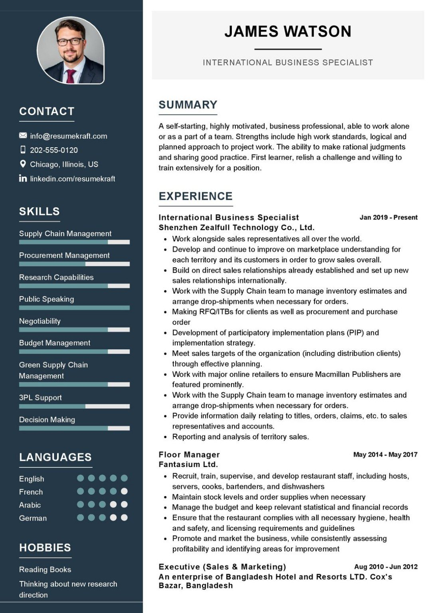
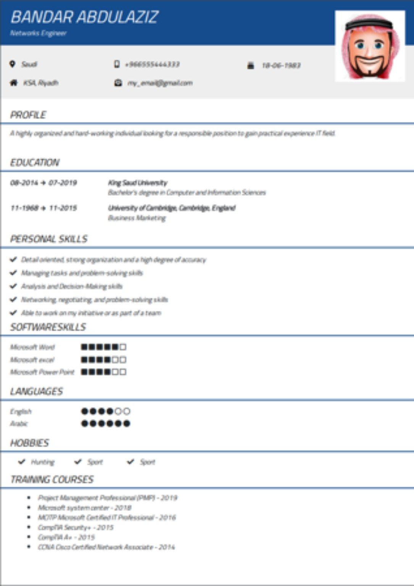
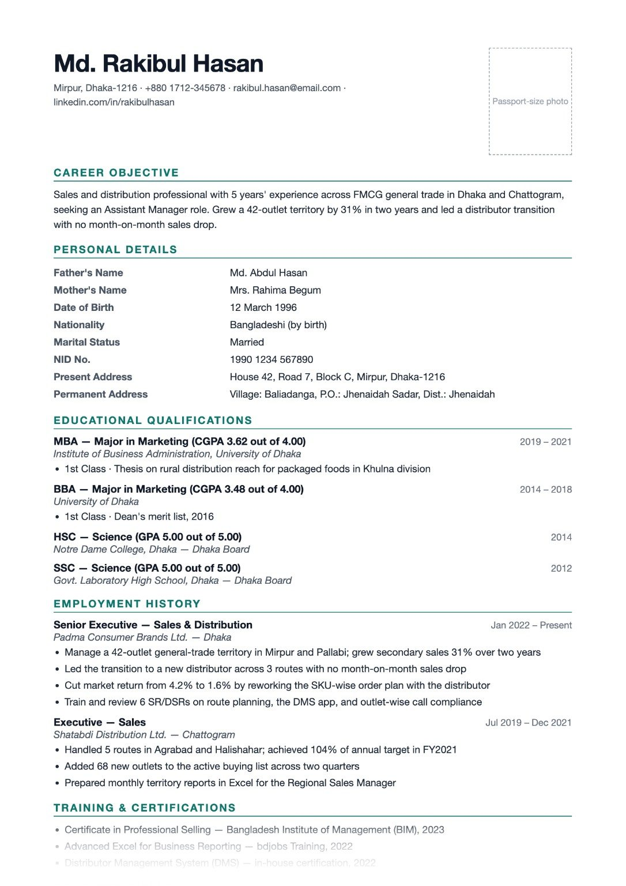

Free Resume Templates: Create a Professional Resume Online
Creating a resume can feel harder than it should. You may know what you have studied, where you have worked, and what skills you have, but turning that information into a clean, professional document is another challenge. The good news is that you do not have to design a resume from a blank page.
A well-designed resume template gives you a structure to work from. Instead of spending hours deciding where your name, education, experience, skills, and contact details should go, you can start with a layout that is already organized and then make it your own.
Deskwork provides a variety of professional-quality resume templates that can be used to create a polished resume online for free. The goal is simple: make the difficult part of resume creation easier while leaving you in control of the information you submit.

Why Use a Resume Template?
A resume is not only a list of your qualifications. It is also a document that needs to be easy to scan. Recruiters and hiring managers often review many applications, so important information should be easy to find.
A good template helps by giving your information a visual hierarchy. Your name and contact information can stand out, while sections such as work experience, education, skills, and certifications remain clearly separated.
Using a template can also reduce common formatting problems. In a document created from scratch, it is easy to end up with inconsistent spacing, oversized headings, crowded sections, or an unnecessary second page. A prepared layout gives you a starting point and lets you spend more time improving the content itself.
Free Resume Templates vs. Paid Resume Templates
Many resume websites advertise professionally designed templates but place important features behind subscriptions, downloads, or payment screens. That can be frustrating when you only need a straightforward resume for a job application.
A free template does not have to look cheap. What matters is whether the layout is readable, consistent, appropriate for the role, and easy to customize.
Deskwork focuses on making professional-looking resume layouts accessible without requiring users to start with an expensive design tool. You can choose a template based on the type of resume you need and then concentrate on presenting your experience clearly.
Different Resume Templates for Different People
There is no single resume design that is perfect for everyone. A university student, a first-time job seeker, an experienced manager, and a creative professional may need different ways to present their information.
1. Simple and Minimal Resume Templates
A minimal resume uses clean typography, clear headings, and plenty of breathing room. It is a strong choice when you want the focus to remain on your qualifications rather than decoration.
This style can work particularly well for students, fresh graduates, administrative roles, office positions, and many traditional professional applications.
2. Modern Resume Templates
A modern resume can use stronger visual hierarchy, subtle design elements, and a more contemporary arrangement of sections. It is useful when you want your application to feel current while remaining professional.
The key is restraint. Modern should mean organized and current, not crowded with graphics that compete with the content.
3. Professional or Corporate Resume Templates
For business, finance, management, consulting, engineering, and other conventional career paths, a structured professional template can be a good fit. These layouts usually prioritize work experience, achievements, education, and skills.
4. Student and Fresh Graduate Resume Templates
If you do not have years of employment history, your resume needs a different emphasis. Education, projects, internships, coursework, certifications, volunteer work, technical skills, and relevant achievements may deserve more space.
A student-focused template can help you organize these sections without making your lack of formal work experience look like a weakness.
5. Creative Resume Templates
People applying for design, media, marketing, content, photography, and similar roles may want a little more visual personality. Even then, readability should remain the priority.
Before using a highly visual design, consider the employer and application process. A creative portfolio can demonstrate creativity more effectively than turning every part of the resume into a graphic.
Three Resume Style Examples
Here are three example layouts that show why resume templates can look very different while serving the same basic purpose: presenting your qualifications in a clear, organized way.
- Professional two-column style: a sidebar can keep contact details, skills, languages, and other supporting information separate from the main experience section.
- Structured Gulf / Middle East style: a more section-based layout can give space to profile, education, personal skills, software skills, languages, hobbies, and training.
- Detailed Bangladesh-style layout: a traditional professional format can give prominent space to career objective, personal details, education, employment history, and training.
These examples are useful as design references, but you should always adapt your resume to the job, employer, country, and application instructions. A template is a starting structure—not a requirement to copy every section shown in the example.
How to Choose the Right Resume Template
When you open a collection of free resume templates, having many choices can create a new problem: which one should you actually use?
Start with these five questions:
- What type of job are you applying for? Choose a design that matches the level of formality of the industry.
- How much experience do you have? Pick a layout that gives enough space to your strongest section, whether that is education, projects, or employment.
- How long is your content? Do not squeeze everything into a tiny layout. Remove repetition before reducing readability.
- Is the template easy to scan? Section headings, dates, job titles, and important qualifications should be easy to locate.
- Can you customize it? A template should support your information, not force your information into an awkward structure.

What Should You Put on a Resume?
The exact sections depend on your background and the position, but a typical resume can include several of the following:
- Name and contact information — your name, phone number, professional email address, and relevant location information.
- Professional summary or objective — a short introduction explaining what you bring to the role.
- Work experience — previous jobs, responsibilities, achievements, and relevant results.
- Education — degrees, institutions, graduation dates, and relevant academic details.
- Skills — technical and professional skills relevant to the position.
- Projects — useful for students, graduates, developers, designers, researchers, and career changers.
- Certifications — professional certificates, licenses, and relevant training.
- Languages — languages you can actually use, with an honest indication of proficiency where useful.
You do not need to include every possible section. The strongest resume is usually the one that makes the most relevant information easy to understand.
How to Write Better Resume Content
A beautiful template cannot fix weak content. Once you select a design, spend time improving the words inside it.
Replace job descriptions with evidence
Instead of only writing what you were responsible for, explain what you accomplished when possible. For example, “Managed social media accounts” is less informative than a statement that explains the scope of the work and a measurable result.
Keep bullet points focused
Each bullet should communicate one useful idea. Start with a strong action verb when appropriate, then explain the work and result.
Customize the resume for the position
A single general resume can be a useful starting point, but the best version for an application should emphasize qualifications that actually matter for that job.
Remove unnecessary information
More information does not automatically make a resume stronger. Remove old, irrelevant, repetitive, or overly detailed material when it does not help the reader understand why you are a good candidate.
How to Make a Resume Online with Deskwork
If you do not want to build your resume from a blank document, you can start with a template on Deskwork.
- Open the resume section. Go to Deskwork and find the resume templates.
- Browse the available designs. Compare the layouts rather than choosing the first template you see.
- Select a suitable template. Pick a design that matches your experience and the position.
- Enter your information. Add your contact details, education, experience, skills, projects, and other relevant sections.
- Review the document. Check spelling, dates, phone numbers, email addresses, spacing, and section order.
- Download your finished resume. Keep a final copy so you can review it before sending your application.
The important part is not simply filling boxes. Read the finished document from the perspective of someone who has never met you. Can they understand what you do, what you have accomplished, and what type of role you want within a few moments?
Ready to Create Your Resume?
Choose a professional resume template and start building your application without designing everything from scratch.
Explore Resume Templates →Resume Design Mistakes to Avoid
Using too many colors
A little visual distinction can help, but a resume does not need a rainbow of colors. Keep the design consistent and make sure the text remains easy to read when printed.
Using oversized graphics
Charts, progress bars, icons, and decorative graphics can consume space without communicating useful information. Use visual elements only when they improve the document.
Making the font too small
Trying to fit every detail onto one page can result in tiny text. A shorter, clearer resume is usually preferable to a document that is technically one page but difficult to read.
Writing one giant paragraph
Hiring managers need to scan the document. Use headings, bullets, spacing, and short sections so the most important information can be found quickly.
Using an unprofessional email address
Your email address is a small detail, but it is part of your professional presentation. When possible, use a simple address based on your name.
Do You Need a One-Page Resume?
Not necessarily. A one-page resume can be excellent when you are a student, recent graduate, or early-career applicant and can present your qualifications clearly without leaving out important information.
Experienced professionals may need more than one page because they have more relevant achievements and employment history. The goal should be clarity rather than hitting an arbitrary page count.
Resume Templates for Students and Fresh Graduates
If you are applying for your first job, do not assume that an empty experience section means you have nothing to put on a resume.
Think about relevant university projects, internships, part-time work, volunteer activities, competitions, certifications, leadership responsibilities, freelance work, and technical skills. A well-structured student resume can show evidence of ability even when formal employment history is limited.
Choose a template that gives education and projects enough space while keeping the document clean. Avoid filling the page with unrelated information simply to make it look full.
Resume Templates for Experienced Professionals
Experienced candidates generally have more information to choose from, which makes editing even more important. You do not need to list every responsibility from every job you have ever held.
Prioritize recent and relevant experience. Highlight achievements, leadership, measurable results, major projects, certifications, and skills that match the position you want.
A professional template with clear sections can help the reader understand your career progression without forcing them to search through large blocks of text.
Should You Use the Same Resume for Every Job?
Your core resume can remain the same, but small changes can make it much more relevant to individual applications.
For example, you might move a particularly relevant skill higher on the page, adjust your summary, or emphasize a project that closely matches the job description. The template does not need to change every time. The content should simply reflect the opportunity.
How to Check Your Resume Before Sending It
Before submitting your resume, run through this checklist:
- Is your name clearly visible?
- Is your email address professional and correct?
- Is your phone number correct?
- Are job titles and company names consistent?
- Are employment and education dates accurate?
- Are there spelling or grammar errors?
- Are the most relevant skills easy to find?
- Are bullet points concise?
- Is the formatting consistent throughout?
- Does the document still look good when viewed or printed as a PDF?
- Have you removed irrelevant information?

Frequently Asked Questions
Are Deskwork resume templates free?
Deskwork is designed to provide free online tools, including resume templates, so you can create a professional-looking resume without starting with a paid design subscription.
Can I use a free resume template for a job application?
Yes. A free template can be used as the design framework for your resume. The important part is that the information is accurate, relevant, readable, and appropriate for the position.
Which resume template is best for a fresh graduate?
A clean student or entry-level template is usually a good starting point. Give enough space to education, projects, internships, skills, and certifications while keeping the layout easy to scan.
Should a resume have a photo?
It depends on the country, employer, industry, and application instructions. Do not automatically add a photo just because a template has a photo area. Follow the expectations for the specific job market.
Can I make a resume from my phone?
Yes. An online resume builder can be useful when you do not have access to a desktop computer. Review the finished document carefully on a larger screen when possible before submitting it.
How many pages should a resume be?
There is no universal page count that works for every applicant. Keep it as concise as possible while preserving relevant evidence of your qualifications.
What makes a resume template professional?
Professional design is mostly about hierarchy, consistency, readability, spacing, and relevance. A template does not need complicated graphics to look polished.
Final Thoughts
A resume template should make the application process easier, not make your resume look like everyone else's. Start with a layout that suits your career stage, replace the sample content with your own information, and then edit every section until it communicates your qualifications clearly.
If you are tired of searching for a resume template only to discover that downloading or editing it requires a subscription, Deskwork gives you a simpler starting point: browse professional-quality templates, choose the style that fits your application, and create your resume online for free.
Explore Deskwork's free resume templates and start building your resume →